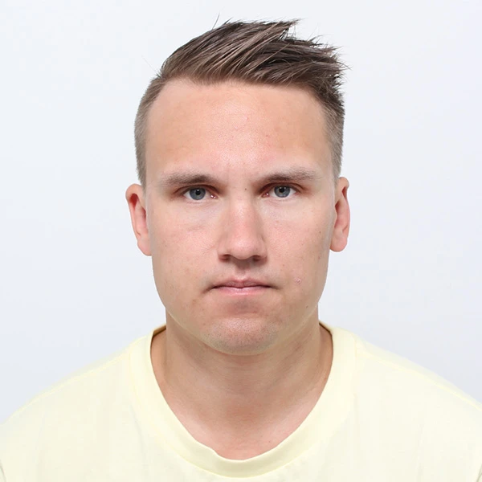

Me Valokilla automatisoimme työnkulkusi ja tekoälyratkaisusi suoraan järjestelmiisi, oli kyse omasta infrastruktuurista tai pilvipalvelusta. Säästät aikaa ja rahaa, ratkaisu rakennetaan aina sinun tarpeidesi mukaan.
Tutkimusten mukaan tiimit menettävät jopa kolmasosan työajastaan toistuviin, manuaalisiin tehtäviin: tietojen siirtoon järjestelmästä toiseen, raporttien kokoamiseen ja samojen kysymysten vastaamiseen uudelleen. Jokainen manuaalinen toisto on myös tilaisuus virheelle.
Organisaatioista on kärsinyt vakavasta käyttökatkosta inhimillisen virheen takia viimeisen kolmen vuoden aikana.
Lähde: Uptime Institute, 2025Rakennamme työnkulut ja tekoälyratkaisut suoraan järjestelmiisi, joko omalla infrastruktuurillasi tai valmiiden pilvipalveluiden päälle, sen mukaan mikä sopii sinulle parhaiten. Ei valmista SaaS-tuotetta, johon sinun pitää sopeutua, vaan ratkaisu joka rakennetaan sinun tarpeidesi mukaan.
Yrityksesi omaan dataan kytketty tekoälyratkaisu, joka toimii sinulle sopivalla infrastruktuurilla.
Skaalautuva chatbot-ratkaisu, joka palvelee useita asiakkaita tai osastoja samasta pohjasta.
Työnkulkujen automatisointi järjestelmien välillä, ilman manuaalista kopiointia.
Autamme kartoittamaan, mistä automaatio tai tekoäly kannattaa aloittaa juuri sinun yrityksessäsi.
Verkkolomake, sähköposti tai CRM
Rikastaa, luokittelee ja päättää seuraavan askeleen
CRM päivittyy, tiimi-ilmoitus lähtee
Sama malli toimii asiakastukeen, laskujen käsittelyyn, tarjousten tekoon ja moneen muuhun toistuvaan työhön.
Analysoimme nykyiset prosessisi, tunnistamme pullonkaulat ja määrittelemme yhdessä automatisoinnin tavoitteet. Maksuton alkukartoitus.
Suunnittelemme ratkaisun arkkitehtuurin, valitsemme teknologiat ja luomme aikataulun. Läpinäkyvä projektisuunnitelma ilman yllätyksiä.
Rakennamme ratkaisun iteratiivisesti: testaamme joka viikko ja pidämme sinut ajan tasalla. Ketterä lähestymistapa joka toimii.
Otamme ratkaisun käyttöön, koulutamme tiimisi ja varmistamme sujuvan siirtymän. Jatkuva tuki varmistaa, ettei mikään jää kesken.
Rakennamme automaation ja tekoälyn juuri sinun järjestelmiisi sopivilla työkaluilla.
Kokosimme yleisimmät kysymykset, joita mietit automaation tai tekoälyratkaisujen hankkimisessa.
Se tarkoittaa rutiinitehtävien siirtämistä älykkäiden työnkulkujen hoidettavaksi. Valok yhdistää eri ohjelmistot, jolloin tieto liikkuu automaattisesti ilman manuaalista työtä. Lue lisää prosessiautomaatio-sivultamme.
Dedikoitu kielimalli on yrityksesi omaan dataan kytketty tekoälyratkaisu, joka ei hallusinoi. Käytämme RAG-tekniikkaa, jolloin tekoäly hakee vastaukset yrityksesi omista tiedostoista turvallisesti. Lue tarkempi selitys blogistamme.
Ei ole. Modernit työkalut mahdollistavat nopean kehityksen ilman raskaita alkuinvestointeja. Automaatio maksaa yleensä itsensä takaisin säästettynä työaikana jo muutamassa kuukaudessa.
Valok tarjoaa jatkuvan valvonnan ja tuen. Jos rajapinta päivittyy tai koodissa ilmenee jotain yllättävää, saamme siitä automaattisen ilmoituksen ja korjaamme tilanteen välittömästi.

Ota yhteyttäAloitetaan sieltä, missä työ jumittuu. 15 minuuttia riittää selvittämään, kannattaako automaatio sinun tapauksessasi.
Tai jätä viesti